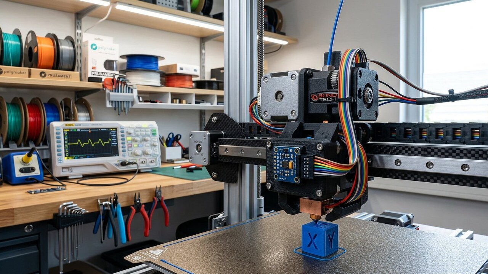

<!DOCTYPE html><html lang="es-CL"><head><meta charset="UTF-8"><meta name="viewport" content="width=device-width,initial-scale=1"><meta name="theme-color" content="#f6f4ee"><title>Input Shaper en Klipper con ADXL345: Guía de Calibración</title><meta name="description" content="Guía paso a paso para calibrar Input Shaper en Klipper con acelerómetro ADXL345: cableado SPI/USB, gráficos de resonancia, filtros MZV/EI y aceleración máxima."><meta name="keywords" content="input shaper klipper, calibrar adxl345 klipper, resonancias klipper, shaper calibrate, kusba rp2040, ghosting ringing 3d, aceleracion klipper"><meta name="author" content="Alberto Gallardo"><meta name="robots" content="index,follow,max-image-preview:large"><link rel="canonical" href="https://www.ukrabot.cl/blog/calibracion-input-shaper-klipper-adxl345/"><meta property="og:type" content="article"><meta property="og:title" content="Input Shaper en Klipper con ADXL345: Guía de Calibración"><meta property="og:description" content="Guía paso a paso para calibrar Input Shaper en Klipper con acelerómetro ADXL345: cableado SPI/USB, gráficos de resonancia, filtros MZV/EI y aceleración máxima."><meta property="og:image" content="https://www.ukrabot.cl/blog/calibracion-input-shaper-klipper-adxl345-hero.jpg"><meta property="og:url" content="https://www.ukrabot.cl/blog/calibracion-input-shaper-klipper-adxl345/"><meta property="og:locale" content="es_CL"><meta property="og:site_name" content="Blog de Ingeniería Robótica"><meta name="twitter:card" content="summary_large_image"><meta name="twitter:title" content="Input Shaper en Klipper con ADXL345: Guía de Calibración"><meta name="twitter:description" content="Guía paso a paso para calibrar Input Shaper en Klipper con acelerómetro ADXL345: cableado SPI/USB, gráficos de resonancia, filtros MZV/EI y aceleración máxima."><meta name="twitter:image" content="https://www.ukrabot.cl/blog/calibracion-input-shaper-klipper-adxl345-hero.jpg"><script type="application/ld+json">{"@context":"https://schema.org","@type":"TechArticle","headline":"Input Shaper en Klipper con ADXL345: Guía de Calibración","description":"Guía paso a paso para calibrar Input Shaper en Klipper con acelerómetro ADXL345: cableado SPI/USB, gráficos de resonancia, filtros MZV/EI y aceleración máxima.","author":{"@type":"Person","name":"Alberto Gallardo","jobTitle":"Analista Programador Computacional","url":"https://www.ukrabot.cl/about"},"publisher":{"@type":"Organization","name":"Blog de Ingeniería Robótica","url":"https://www.ukrabot.cl","logo":{"@type":"ImageObject","url":"https://www.ukrabot.cl/logo.png"}},"datePublished":"2026-08-27","dateModified":"2026-08-27","mainEntityOfPage":{"@type":"WebPage","@id":"https://www.ukrabot.cl/blog/calibracion-input-shaper-klipper-adxl345/"},"image":"https://www.ukrabot.cl/blog/calibracion-input-shaper-klipper-adxl345-hero.jpg","wordCount":4922,"inLanguage":"es-CL","proficiencyLevel":"Avanzado","keywords":"input shaper klipper, calibrar adxl345 klipper, resonancias klipper, shaper calibrate, kusba rp2040, ghosting ringing 3d, aceleracion klipper"}</script><script type="application/ld+json">{"@context":"https://schema.org","@type":"BreadcrumbList","itemListElement":[{"@type":"ListItem","position":1,"name":"Inicio","item":"https://www.ukrabot.cl/"},{"@type":"ListItem","position":2,"name":"Blog","item":"https://www.ukrabot.cl/blog/"},{"@type":"ListItem","position":3,"name":"Input Shaper en Klipper con ADXL345: Guía de Calibración","item":"https://www.ukrabot.cl/blog/calibracion-input-shaper-klipper-adxl345/"}]}</script><script type="application/ld+json">{"@context":"https://schema.org","@type":"FAQPage","mainEntity":[{"@type": "Question", "name": "¿Por qué Klipper recomienda el filtro 2HUMP_EI con menor aceleración si MZV me da mayor velocidad?", "acceptedAnswer": {"@type": "Answer", "text": "Klipper selecciona el shaper evaluando la vibración residual proyectada (< 5 %) combinada con el ancho de banda del pico. Si tu gráfico FFT muestra dos picos cercanos (por ejemplo a 42 Hz y 51 Hz debido a correas con distinta tensión o holgura en el carro), el filtro MZV solo anula una frecuencia puntual y deja oscilaciones residuales en el segundo pico. 2HUMP_EI atenúa una banda más ancha, garantizando cero ghosting a costa de un mayor tiempo de retraso (smoothing) y menor aceleración máxima recomendada."}}, {"@type": "Question", "name": "¿Puedo calibrar Input Shaper imprimiendo la torre de prueba sin comprar un acelerómetro?", "acceptedAnswer": {"@type": "Answer", "text": "Sí, usando el comando TUNING_TOWER con el parámetro COMMAND=SET_VELOCITY_LIMIT y midiendo manualmente la separación entre crestas de ringing con un calibre digital. Sin embargo, este método manual solo estima una frecuencia dominante por eje, asume un factor de amortiguamiento genérico y no puede detectar armónicos secundarios ni torsiones en el pórtico. Con un ADXL345 de $4.500 CLP obtienes la curva espectral completa de 5 a 133 Hz en menos de dos minutos."}}, {"@type": "Question", "name": "¿Debo calibrar Input Shaper con la cama fría o caliente?", "acceptedAnswer": {"@type": "Answer", "text": "En impresoras tipo bedslinger (donde la cama se mueve en el eje Y), debes calibrar siempre con la cama a temperatura de trabajo (60 °C para PLA, 80 °C para PETG) y con la lámina PEI y los clips o imanes colocados. La dilatación térmica del aluminio y la masa del fleje magnético alteran la tensión de la correa Y y la frecuencia propia del sistema hasta en un 8 % respecto a una medición en frío."}}, {"@type": "Question", "name": "¿Por qué obtengo el error 'Timer too close' o 'Lost communication with MCU' durante el barrido?", "acceptedAnswer": {"@type": "Answer", "text": "Ocurre habitualmente por caídas de paquetes en el bus SPI debido a cables demasiado largos (> 30 cm sin blindaje), interferencia electromagnética de los motores paso a paso, o una frecuencia spi_speed excesiva. Reduce spi_speed a 2000000 (2 MHz) en printer.cfg, utiliza un cable apantallado o cambia a un acelerómetro USB basado en microcontrolador RP2040 (como KUSBA o Fly-ADXL), que transmite datos digitales procesados mediante USB sin susceptibilidad al ruido SPI analógico."}}, {"@type": "Question", "name": "¿Es necesario dejar el acelerómetro ADXL345 montado permanentemente en la impresora?", "acceptedAnswer": {"@type": "Answer", "text": "No es necesario. Una vez ejecutado SHAPER_CALIBRATE y guardados los parámetros shaper_type_x, shaper_freq_x, shaper_type_y y shaper_freq_y en printer.cfg con SAVE_CONFIG, el acelerómetro se puede desmontar. Solo necesitas recalibrar si cambias componentes mecánicos relevantes: cambio de cabezal/extrusor, reensamblaje del hotend, retensado de correas o cambio de poleas."}}, {"@type": "Question", "name": "¿Cómo afecta el parámetro max_accel del slicer a la calidad superficial final?", "acceptedAnswer": {"@type": "Answer", "text": "Input Shaper permite operar a aceleraciones elevadas (5.000 a 10.000 mm/s²) sin vibraciones, pero si superas el límite de aceleración recomendado por Klipper para tu shaper elegido, el algoritmo aplicará un suavizado excesivo (smoothing > 0.20), redondeando aristas vivas y detalles pequeños. En el laminador (OrcaSlicer o PrusaSlicer), ajusta la aceleración de paredes externas a un valor conservador (3.000–4.000 mm/s²) y deja las aceleraciones máximas de 7.000–9.000 mm/s² para rellenos y movimientos en vacío (travel)."}}]}</script><link rel="preconnect" href="https://fonts.googleapis.com"><link rel="preconnect" href="https://fonts.gstatic.com" crossorigin><link href="https://fonts.googleapis.com/css2?family=DM+Serif+Display&family=Inter:wght@300;400;500;600;700&display=swap" rel="stylesheet"><style>:root{--ink:#f6f4ee;--card:#fff;--text:#1e1b15;--muted:#57534a;--quiet:#8b8577;--gold:#a97b23;--gold-bright:#e4c07a;--blue:#2f6fb0;--line:rgba(30,25,15,.09)}*{box-sizing:border-box}html{scroll-behavior:smooth}body{margin:0;background:var(--ink);color:var(--text);font-family:Inter,system-ui,-apple-system,Segoe UI,sans-serif;line-height:1.7;overflow-x:hidden}img{max-width:100%;height:auto}a{color:var(--blue);text-underline-offset:3px}.container{max-width:1050px;margin:auto;padding:0 24px}.site-nav{position:sticky;top:0;z-index:50;background:rgba(246,244,238,.95);backdrop-filter:blur(12px);border-bottom:1px solid var(--line)}.nav-inner{position:relative;display:flex;justify-content:space-between;align-items:center;padding:16px 24px;max-width:1050px;margin:auto;gap:12px}.logo{color:var(--text);text-decoration:none;font-family:Georgia,serif;font-size:1.35rem;flex-shrink:0}.logo span{color:var(--gold);font-style:italic}.nav-links{display:flex;gap:20px;font-size:.86rem}.nav-links a{color:var(--muted);text-decoration:none;white-space:nowrap}.nav-toggle{display:none;flex-direction:column;justify-content:center;gap:5px;width:38px;height:38px;background:none;border:1px solid var(--line);border-radius:8px;cursor:pointer}.nav-toggle span{display:block;width:18px;height:2px;background:var(--text);margin:auto}.progress-bar{position:fixed;top:0;left:0;height:3px;background:linear-gradient(90deg,var(--gold),var(--blue));z-index:300}.hero{position:relative;min-height:54vh;display:flex;align-items:end;overflow:hidden;background:#151310}.hero>img{position:absolute;inset:0;width:100%;height:100%;object-fit:cover;filter:brightness(.5) contrast(1.08)}.hero:after{content:"";position:absolute;inset:0;background:linear-gradient(180deg,rgba(18,15,11,.3),rgba(18,15,11,.9))}.hero-inner{position:relative;z-index:2;padding:100px 24px 70px;width:100%;max-width:1050px;margin:auto}.eyebrow{color:var(--gold-bright);font-size:.76rem;letter-spacing:.13em;text-transform:uppercase;font-weight:700}.hero h1{font-family:Georgia,serif;font-size:clamp(2rem,6vw,4.2rem);line-height:1.08;font-weight:400;max-width:930px;margin:18px 0;color:#fff}.hero p{color:rgba(245,243,238,.8);max-width:760px;font-size:1.05rem}.byline{font-size:.85rem!important;color:rgba(245,243,238,.58)!important}.byline a{color:var(--gold-bright)}.article-body{padding-top:64px;padding-bottom:90px}.article-body section{scroll-margin-top:80px}.article-body h2{font-family:Georgia,serif;font-size:2rem;font-weight:400;line-height:1.2;margin:58px 0 16px}.article-body p,.article-body li{color:var(--muted)}.article-body p{margin:0 0 20px}.article-body li{margin:8px 0}.article-body strong{color:var(--text)}.toc,.note,.cta{background:linear-gradient(135deg,rgba(169,123,35,.08),rgba(47,111,176,.06));border:1px solid var(--line);border-radius:14px;padding:24px;margin:28px 0}.toc h2{font-family:inherit;font-size:1.05rem;margin:0 0 10px}.toc ol{margin:0;padding-left:22px}.toc a{color:var(--muted);text-decoration:none}.note{border-left:4px solid var(--gold)}.warning{background:rgba(178,40,30,.06);border:1px solid rgba(178,40,30,.25);border-left:4px solid #b2281e;border-radius:14px;padding:24px;margin:28px 0;color:var(--muted)}.article-img{margin:0 0 42px;border:1px solid var(--line);border-radius:14px;overflow:hidden}.article-img img{width:100%;display:block}.caption{padding:12px 16px;background:var(--card);color:var(--quiet);font-size:.82rem}.table-wrap{overflow-x:auto;border:1px solid var(--line);border-radius:12px;margin:22px 0}table{border-collapse:collapse;width:100%;min-width:650px;background:var(--card)}th,td{text-align:left;padding:13px 14px;border-bottom:1px solid var(--line);color:var(--muted)}th{background:#faf7f0;color:var(--text);font-size:.78rem;text-transform:uppercase;letter-spacing:.06em}td:first-child{color:var(--text);font-weight:600}pre{background:#14121a;border:1px solid rgba(255,255,255,.08);border-radius:12px;padding:20px;color:#e8d9b6;overflow-x:auto;font-size:.88rem;line-height:1.5}code{font-family:ui-monospace,SFMono-Regular,Consolas,monospace}.faq details{border-top:1px solid var(--line);padding:16px 0}.faq summary{cursor:pointer;font-weight:600;color:var(--text)}.faq p{padding-top:10px;margin:0}.sources{padding:48px 0;border-top:1px solid var(--line);color:var(--muted)}.sources h2{font-family:Georgia,serif;font-size:1.6rem;font-weight:400;margin-bottom:16px;color:var(--text)}.sources ul{padding-left:20px}.sources li{margin:8px 0}.disclosure{font-size:.78rem;color:var(--quiet);border-top:1px solid var(--line);padding-top:16px;margin-top:34px}.cta h3{margin:0 0 8px;font-size:1.05rem;color:var(--text)}.cta p{margin:0}.site-footer{padding:40px 24px;border-top:1px solid var(--line);font-size:.85rem;color:var(--quiet)}.site-footer a{color:var(--muted)}@media(max-width:760px){.nav-toggle{display:flex}.nav-links{position:absolute;top:100%;left:0;right:0;flex-direction:column;align-items:flex-start;gap:2px;background:rgba(246,244,238,.98);backdrop-filter:blur(12px);border-bottom:1px solid var(--line);padding:8px 24px 18px;display:none}.nav-links.open{display:flex}.nav-links a{padding:10px 0;width:100%}}@media(max-width:700px){.hero-inner{padding:80px 20px 50px}.article-body h2{font-size:1.6rem;margin:44px 0 14px}.article-body{padding-top:48px;padding-bottom:60px}}</style><script>window.dataLayer=window.dataLayer||[];function gtag(){dataLayer.push(arguments);}gtag('consent','default',{'ad_storage':'denied','ad_user_data':'denied','ad_personalization':'denied','analytics_storage':'denied','wait_for_update':500});(function(){try{var c=document.cookie.match(/(?:^|;\s*)rel_consent=([^;]+)/);if(c&&c[1]==='granted'){gtag('consent','update',{'ad_storage':'granted','ad_user_data':'granted','ad_personalization':'granted','analytics_storage':'granted'});}}catch(e){}})();</script><script async src="https://pagead2.googlesyndication.com/pagead/js/adsbygoogle.js?client=ca-pub-7032484018692343" crossorigin="anonymous"></script><script async src="https://www.googletagmanager.com/gtag/js?id=G-1ZVHF8X35Q"></script><script>window.dataLayer=window.dataLayer||[];function gtag(){dataLayer.push(arguments);}gtag('js',new Date());gtag('config','G-1ZVHF8X35Q');</script></head><body><div class="progress-bar" id="progress-bar" aria-hidden="true"></div><nav class="site-nav" aria-label="Navegación del sitio"><div class="nav-inner"><a class="logo" href="/">Robótica <span>Ingeniería</span></a><button class="nav-toggle" id="nav-toggle" aria-expanded="false" aria-controls="nav-links" aria-label="Abrir menú de navegación"><span></span><span></span><span></span></button><div class="nav-links" id="nav-links"><a href="/">Inicio</a><a href="/#categories">Tutoriales</a><a href="/#proyecto-destacado">Proyecto del Mes</a><a href="/about">Sobre Nosotros</a><a href="/contact">Contacto</a></div></div></nav><header class="hero"><div class="hero-inner"><div class="eyebrow">Impresión 3D y Energía de Taller · Actualizado el <time datetime="2026-08-27">27 de agosto de 2026</time></div><h1>Input Shaper en Klipper con ADXL345: Guía de Calibración</h1><p>Aprende a medir la frecuencia natural de tu impresora 3D, interpretar curvas FFT, seleccionar el shaper óptimo (MZV, EI, 2HUMP_EI) y calcular aceleraciones seguras sin ghosting.</p><p class="byline">Por <a href="/about">Alberto Gallardo</a>, Analista Programador Computacional · 21 min de lectura</p></div></header><main class="container article-body"><article>
<div class="toc" aria-label="Tabla de contenidos">
  <h2>Qué cubre esta guía</h2>
  <ol>
    <li><a href="#fisica-ringing">Física del ringing: por qué tu impresora vibra al acelerar</a></li>
    <li><a href="#hardware-adxl345">Arquitectura del acelerómetro: ADXL345 SPI vs soluciones USB RP2040</a></li>
    <li><a href="#cableado-montaje">Cableado, apantallamiento y fijación mecánica al cabezal y a la cama</a></li>
    <li><a href="#configuracion-klipper">Configuración de Klipper: módulos [adxl345], [resonance_tester] y MCU Linux</a></li>
    <li><a href="#prueba-ruido">Prueba de comunicación y baseline de ruido con ACCELEROMETER_QUERY</a></li>
    <li><a href="#ejecucion-medicion">Ejecución del barrido de frecuencias: TEST_RESONANCES y SHAPER_CALIBRATE</a></li>
    <li><a href="#interpretacion-graficos">Interpretación de gráficos FFT: picos, densidad espectral y damping</a></li>
    <li><a href="#comparativa-shapers">Comparativa técnica de algoritmos: ZV, MZV, ZVD, EI, 2HUMP_EI y 3HUMP_EI</a></li>
    <li><a href="#calculo-aceleracion">Cálculo de aceleración máxima recomendada y límites de suavizado</a></li>
    <li><a href="#ajustes-slicer">Integración en el laminador: perfiles para OrcaSlicer y PrusaSlicer</a></li>
    <li><a href="#diagnostico-fallas">Matriz de diagnóstico: picos asimétricos, fallas de bus SPI y cuelgues</a></li>
    <li><a href="#costos-chile">Presupuesto y componentes en el mercado chileno (2026)</a></li>
    <li><a href="#faq">Preguntas frecuentes</a></li>
    <li><a href="#fuentes">Fuentes primarias y lecturas recomendadas</a></li>
  </ol>
</div>

<div class="ad-slot" style="margin:34px 0;min-height:280px;text-align:center;">
  <!-- ANUNCIO UKRABOT -->
  <ins class="adsbygoogle"
       style="display:block"
       data-ad-client="ca-pub-7032484018692343"
       data-ad-slot="7434550690"
       data-ad-format="auto"
       data-full-width-responsive="true"></ins>
  <script>(adsbygoogle = window.adsbygoogle || []).push({});</script>
</div>

<section id="fisica-ringing">
<h2>Física del ringing: por qué tu impresora vibra al acelerar</h2>
<p>Cuando un cabezal de impresión 3D cambia de dirección bruscamente a velocidades superiores a 150 mm/s y aceleraciones por encima de 3.000 mm/s², las fuerzas dinámicas excitan las frecuencias naturales de oscilación de la estructura mecánica. El conjunto compuesto por las correas dentadas GT2 de poliuretano o goma cloropreno con fibra de vidrio, el carro de extrusión directo con su motor paso a paso, los rodamientos lineales y el propio chasis de perfiles de aluminio extruido actúa como un sistema masa-resorte-amortiguador subamortiguado.</p>

<p>Al llegar a una esquina viva de 90°, el perfil trapezoidal de aceleración impone un cambio abrupto en la segunda derivada de la posición (un impulso de <em>jerk</em> infinito en modelos simplificados). Este escalón de fuerza hace que el cabezal no se detenga de forma ideal, sino que experimente una oscilación armónica amortiguada alrededor de la trayectoria nominal. A medida que el extrusor deposita el filamento plástico caliente fundido mientras vibra transversalmente, esas microdesviaciones espaciales quedan congeladas en la superficie de la pieza en forma de ondas periódicas paralelas a la arista, un defecto conocido en la industria como <strong>ringing</strong>, <strong>ghosting</strong> o <strong>eco de vibración</strong>.</p>

<p>En el dominio temporal y espacial, la distancia física entre las crestas de oscilación reflejadas en la pared impresa ($w_{	ext{onda}}$, medida en milímetros) está directamente relacionada con la velocidad de traslación del cabezal ($v_{	ext{print}}$, en mm/s) y la frecuencia natural de resonancia de la cinemática ($f_{	ext{res}}$, en Hertz):</p>

<div class="table-wrap">
<table>
<thead><tr><th>Parámetro físico</th><th>Símbolo</th><th>Unidad típica</th><th>Efecto mecánico en la impresión</th></tr></thead>
<tbody>
<tr><td>Frecuencia natural</td><td>$f_{	ext{res}}$</td><td>Hz (1/s)</td><td>Determina cuántos ciclos por segundo vibra el cabezal; a mayor rigidez, mayor frecuencia.</td></tr>
<tr><td>Longitud de onda de ringing</td><td>$w_{	ext{onda}}$</td><td>mm</td><td>Espaciado visible entre ondas en la pieza: $w_{	ext{onda}} = v_{	ext{print}} / f_{	ext{res}}$.</td></tr>
<tr><td>Factor de amortiguamiento</td><td>$\zeta$</td><td>Adimensional (0,05–0,15)</td><td>Tasa a la que decaen las oscilaciones; las correas de goma aportan amortiguamiento histerético.</td></tr>
<tr><td>Masa suspendida</td><td>$m_{	ext{carro}}$</td><td>Gramos (g)</td><td>Masa del motor, hotend, ventiladores y disipador; a mayor masa, menor $f_{	ext{res}}$ y mayor inercia.</td></tr>
<tr><td>Rigidez de transmisión</td><td>$k_{	ext{correa}}$</td><td>N/mm</td><td>Tensión y módulo elástico de las correas dentadas; si están sueltas, $f_{	ext{res}}$ cae drásticamente.</td></tr>
</tbody>
</table>
</div>

<p>Durante años, la única forma de mitigar el ghosting en firmwares tradicionales como Marlin consistía en estrangular las aceleraciones a valores conservadores de 500 a 1.200 mm/s² y reducir la velocidad de las paredes externas a 30 o 40 mm/s, duplicando o triplicando el tiempo total de fabricación. La llegada de <strong>Input Shaper</strong> a firmwares modernos como <a href="/blog/klipper-vs-marlin-que-firmware-elegir-para-tu-impresora-3d">Klipper</a> revolucionó la fabricación aditiva: en lugar de frenar la máquina mecánicamente, el planificador matemático de Klipper convoluciona los comandos de movimiento con un tren de impulsos temporales calculados para cancelar activamente la resonancia del sistema antes de enviar los pulsos de paso al <a href="/blog/driver-a4988-vs-drv8825-vs-tmc2209">driver del motor paso a paso</a>.</p>
</section>

<section id="hardware-adxl345">
<h2>Arquitectura del acelerómetro: ADXL345 SPI vs soluciones USB RP2040</h2>
<p>Para que el algoritmo de conformación de entrada (Input Shaping) funcione a la perfección, Klipper necesita conocer con precisión matemática la frecuencia fundamental de resonancia ($f_0$) y la curva de respuesta en frecuencia de cada eje cinemático independiente (X e Y). Aunque es posible estimar esta frecuencia imprimiendo torres de prueba visuales, el método estándar industrial emplea un <strong>acelerómetro microelectromecánico (MEMS) triaxial</strong> montado temporalmente sobre la estructura en movimiento.</p>

<p>El sensor hegemónico en el ecosistema Klipper es el <strong>Analog Devices ADXL345</strong>, un acelerómetro digital capacitivo de silicio con salida de datos de hasta 13 bits de resolución, rango dinámico seleccionable hasta $\pm 16\,	ext{g}$ y una tasa de muestreo de salida (Output Data Rate - ODR) de hasta 3.200 Hz. Esta tasa de muestreo permite capturar vibraciones de hasta 1.600 Hz según el teorema de Nyquist-Shannon, cubriendo holgadamente el espectro de resonancias estructurales de cualquier impresora 3D, que típicamente oscila entre 20 Hz y 120 Hz.</p>

<div class="table-wrap">
<table>
<thead><tr><th>Característica</th><th>ADXL345 SPI Clásico (GPIO Raspberry Pi)</th><th>Acelerómetro USB dedicado (KUSBA / RP2040)</th></tr></thead>
<tbody>
<tr><td>Tipo de interfaz</td><td>SPI a 4 hilos (MOSI, MISO, SCLK, CS) a 3,3 V</td><td>USB 2.0 Full Speed (D+, D-, VBUS, GND) con conector USB-C</td></tr>
<tr><td>Microcontrolador intermedio</td><td>Ninguno (comunicación directa con SoC del SBC)</td><td>Microcontrolador Raspberry Pi RP2040 integrado en PCB</td></tr>
<tr><td>Inmunidad al ruido electromagnético</td><td>Baja: susceptible a EMI de cables de motor y PWM</td><td>Muy alta: transmisión digital de paquetes USB con checksum</td></tr>
<tr><td>Longitud máxima de cable fiable</td><td>25–35 cm (requiere cable trenzado o blindado)</td><td>1,5 a 3 metros con cable USB comercial apantallado</td></tr>
<tr><td>Carga de CPU en el Host (Raspberry Pi)</td><td>Interrupciones de hardware continuas vía Linux SPI</td><td>Procesamiento offload en MCU secundaria via Klipper MCU</td></tr>
<tr><td>Costo referencial en Chile (2026)</td><td>$3.900 – $5.500 CLP (módulo azul genérico)</td><td>$12.900 – $18.500 CLP (KUSBA v2 / Fly-ADXL)</td></tr>
</tbody>
</table>
</div>

<p>Si utilizas una placa ADXL345 SPI genérica conectada directamente a los pines GPIO de una Raspberry Pi 3 o 4, debes tener extrema precaución con los niveles de voltaje: el circuito integrado ADXL345 opera estrictamente a <strong>3,3 V en sus líneas VDD e IOVDD</strong>. Conectar el pin VCC a la línea de 5 V de la Raspberry Pi sin un regulador de tensión LDO integrado destruirá el circuito integrado en milisegundos. Además, los módulos genéricos suelen carecer de condensadores de desacoplo de alta calidad en la línea de alimentación, por lo que se recomienda añadir un condensador cerámico multicapa (MLCC) de 100 nF en paralelo con uno de tántalo de 10 µF entre VCC y GND cerca del chip.</p>
</section>

<section id="cableado-montaje">
<h2>Cableado, apantallamiento y fijación mecánica al cabezal y a la cama</h2>
<p>La integridad de la señal durante un barrido de resonancias es crítica. Klipper transfiere miles de lecturas de aceleración por segundo; si una caída de tensión parásita o una inducción electromagnética corrompe un solo byte en la trama SPI, el demonio `klipper.service` arrojará un error irrecuperable de tipo <em>"Resonance data corrupted"</em> o <em>"Timer too close"</em>, abortando la medición.</p>

<p>Para conexiones SPI directas a los pines GPIO de una Raspberry Pi, el patillaje físico estándar corresponde al bus SPI0 del conector de 40 pines:</p>

<ul>
<li><strong>Pin 1 (3.3V Power):</strong> Conectar a VCC del módulo ADXL345 (o al pin 3V3 si la placa tiene regulador).</li>
<li><strong>Pin 6 (GND):</strong> Conectar a GND del acelerómetro.</li>
<li><strong>Pin 19 (GPIO 10 / SPI0_MOSI):</strong> Conectar al pin SDA / MOSI / SDI del sensor.</li>
<li><strong>Pin 21 (GPIO 9 / SPI0_MISO):</strong> Conectar al pin SDO / MISO del sensor.</li>
<li><strong>Pin 23 (GPIO 11 / SPI0_SCLK):</strong> Conectar al pin SCL / SCK del sensor.</li>
<li><strong>Pin 24 (GPIO 8 / SPI0_CE0):</strong> Conectar al pin CS (Chip Select) del sensor.</li>
</ul>

<div class="warning">
<strong>Advertencia de integridad mecánica:</strong> El acelerómetro debe atornillarse con total rigidez al carro metálico del cabezal o a la placa porta-nozzle mediante pernos M3. <strong>Bajo ningún concepto utilices cinta adhesiva de doble contacto acolchada o masilla adhesiva (blu-tack)</strong> para fijar el sensor. La espuma flexible de la cinta actúa como un amortiguador viscoelástico mecánico de paso bajo, atenuando artificialmente las frecuencias reales de 60 Hz y creando picos falsos por resonancia propia de la masa del sensor sobre el adhesivo elástico.
</div>

<p>En impresoras de cinemática cartesiana tradicional con cama móvil en el eje Y (bedslingers como Ender 3, Artillery Genius o Sovol SV06), la calibración debe realizarse en dos etapas: primero se fija el acelerómetro al cabezal para medir el eje X; luego se desmonta y se atornilla firmemente a una esquina o al borde de la placa de aluminio de la cama caliente para medir el eje Y. En impresoras CoreXY o delta (como Voron 2.4, RatRig V-Core o Bambu Lab), tanto el eje X como el eje Y comparten el carro móvil superior, por lo que basta con fijar el sensor de forma permanente o temporal en el cabezal de herramientas (toolhead).</p>
</section>

<section id="configuracion-klipper">
<h2>Configuración de Klipper: módulos [adxl345], [resonance_tester] y MCU Linux</h2>
<p>Para que Klipper pueda comunicarse con los pines GPIO del ordenador monoplaca (SBC) anfitrión, es necesario compilar e instalar el servicio auxiliar <code>klipper_host_mcu</code> (Linux Microcontroller). Este proceso se realiza conectándose por SSH a la Raspberry Pi y ejecutando la rutina oficial de compilación:</p>

<pre><code>cd ~/klipper/
make menuconfig
# En el menú interactivo, seleccionar:
# Microcontroller Architecture ---> Linux process
# Salir y guardar cambios (Q -> Y)

make flash
sudo cp ./scripts/klipper-mcu.service /etc/systemd/system/
sudo systemctl enable --now klipper-mcu.service</code></pre>

<p>Una vez que el servicio `klipper-mcu` está activo y en ejecución, se edita el archivo principal de configuración <code>printer.cfg</code> a través de la interfaz web (Mainsail o Fluidd) incorporando los siguientes bloques de directivas:</p>

<pre><code>[mcu rpi]
serial: /tmp/klipper_host_mcu

[adxl345]
cs_pin: rpi:None
spi_speed: 2000000
axes_map: x, y, z

[resonance_tester]
accel_chip: adxl345
probe_points:
    117.5, 117.5, 30  # Coordenadas X, Y, Z del centro geométrico del volumen de impresión
accel_per_hz: 75       # Aceleración generada por Hz de barrido (mm/s^2)
min_freq: 5            # Frecuencia inicial del barrido (Hz)
max_freq: 133.33       # Frecuencia final del barrido (Hz)
hz_per_sec: 1          # Velocidad de barrido en frecuencia (Hz/segundo)</code></pre>

<p>Si utilizas un acelerómetro USB basado en RP2040 (como KUSBA v2 o BigTreeTech ADXL345-USB), la sección <code>[mcu rpi]</code> se sustituye por la identificación por ID de puerto serie del microcontrolador USB correspondiente:</p>

<pre><code>[mcu kusba]
serial: /dev/serial/by-id/usb-KUSBA_rp2040_E661385283457A2B-if00

[adxl345]
cs_pin: kusba:gpio9
spi_software_sclk_pin: kusba:gpio10
spi_software_mosi_pin: kusba:gpio11
spi_software_miso_pin: kusba:gpio12
axes_map: x, y, z

[resonance_tester]
accel_chip: adxl345
probe_points:
    150, 150, 20</code></pre>

<p>El parámetro <code>axes_map</code> es crucial: según la orientación física en la que hayas atornillado la placa al cabezal, los ejes del chip pueden no coincidir con los ejes de coordenadas del espacio de trabajo. Por ejemplo, si el sensor está montado verticalmente, podrías requerir <code>axes_map: -x, z, -y</code> para alinear correctamente los vectores de aceleración con el sistema cartesiano de la máquina.</p>
</section>

<div class="ad-slot" style="margin:34px 0;min-height:280px;text-align:center;">
  <!-- ANUNCIO UKRABOT -->
  <ins class="adsbygoogle"
       style="display:block"
       data-ad-client="ca-pub-7032484018692343"
       data-ad-slot="7434550690"
       data-ad-format="auto"
       data-full-width-responsive="true"></ins>
  <script>(adsbygoogle = window.adsbygoogle || []).push({});</script>
</div>

<section id="prueba-ruido">
<h2>Prueba de comunicación y baseline de ruido con ACCELEROMETER_QUERY</h2>
<p>Antes de poner los motores en movimiento para excitar resonancias mecánicas violentas, es obligatorio verificar la integridad de la comunicación y medir el ruido de fondo del banco de trabajo. Con la impresora encendida y en reposo (motores desenergizados o en retención), ejecuta en la consola de comandos de Mainsail/Fluidd:</p>

<pre><code>ACCELEROMETER_QUERY</code></pre>

<p>La consola debe devolver de inmediato una respuesta con los valores brutos de aceleración en los tres ejes cartesianos expresados en unidades de gravedad local:</p>

<pre><code>// Recv: // adxl345 values (x, y, z): 142.234500, -89.452100, 9812.304500</code></pre>

<p>Observa el vector de la gravedad terrestre: el eje perpendicular al suelo (habitualmente Z) debe reportar un valor cercano a los $9.806\,	ext{mm/s}^2$ ($1\,	ext{g}$), mientras que los ejes paralelos al plano horizontal deben oscilar en torno a $0\,	ext{mm/s}^2$ ($\pm 300\,	ext{mm/s}^2$). Si la respuesta arroja valores de <code>0, 0, 0</code> constantes o un mensaje de error <code>Failed to read ADXL345 register</code>, revisa de inmediato la continuidad de las pistas MISO/MOSI y el nivel lógico del pin CS.</p>

<p>El siguiente paso consiste en medir el suelo de ruido ambiental y electromagnético mediante el comando:</p>

<pre><code>MEASURE_AXES_NOISE</code></pre>

<p>Klipper tomará muestras estáticas durante 2 segundos y calculará la desviación estándar del ruido en cada eje. En una instalación saludable con fuente de poder conmutada Mean Well de 24 V correctamente filtrada y cables apantallados, el ruido estático debe situarse por debajo de <strong>100 mm/s²</strong> en todos los ejes. Si el ruido estático supera los 400 mm/s², existe un problema severo de acoplamiento inductivo con la fuente de alimentación, la línea de tierra o los cables de los ventiladores PWM, lo que falseará el análisis espectral posterior.</p>
</section>

<section id="ejecucion-medicion">
<h2>Ejecución del barrido de frecuencias: TEST_RESONANCES y SHAPER_CALIBRATE</h2>
<p>Para iniciar la prueba cinemática, asegúrate de que el cabezal esté posicionado en el centro de la cama caliente, libre de obstáculos y con los cables del hotend bien sujetos para que no se enganchen. Existen dos métodos para ejecutar la medición:</p>

<h3>Método 1: Calibración y guardado automático con SHAPER_CALIBRATE</h3>
<p>Es el procedimiento más directo. Ejecuta en la consola:</p>

<pre><code>SHAPER_CALIBRATE AXIS=X</code></pre>

<p>La impresora comenzará a vibrar en el eje X, emitiendo un zumbido sinusoidal cuya tonalidad acústica se eleva progresivamente desde un tono grave de 5 Hz hasta un chillido agudo de 133 Hz a lo largo de aproximadamente 90 segundos. Al finalizar el barrido del eje X, Klipper procesará internamente los datos con su librería matemática integrada y sugerirá en consola el shaper óptimo y la frecuencia calculada. Repite el procedimiento para el eje ortogonal:</p>

<pre><code>SHAPER_CALIBRATE AXIS=Y</code></pre>

<p>Una vez concluidas ambas pruebas, ejecuta <code>SAVE_CONFIG</code> para que Klipper inserte automáticamente las líneas calibradas en la sección <code>[input_shaper]</code> al final de tu <code>printer.cfg</code> y reinicie el firmware.</p>

<h3>Método 2: Barrido sin procesar y generación de datos CSV con TEST_RESONANCES</h3>
<p>Para un análisis de ingeniería riguroso, es preferible capturar los archivos de datos brutos en formato CSV ejecutando:</p>

<pre><code>TEST_RESONANCES AXIS=X
TEST_RESONANCES AXIS=Y</code></pre>

<p>Estos comandos generan archivos con marca de tiempo en la carpeta temporal del sistema operativo Linux (<code>/tmp/resonances_x_*.csv</code> y <code>/tmp/resonances_y_*.csv</code>), los cuales contienen miles de filas con las columnas de tiempo en segundos, aceleración en X, aceleración en Y y aceleración en Z registradas por el sensor.</p>
</section>

<section id="interpretacion-graficos">
<h2>Interpretación de gráficos FFT: picos, densidad espectral y damping</h2>
<p>A partir de los archivos CSV generados por Klipper, podemos ejecutar el script oficial de Python con las librerías <code>numpy</code> y <code>matplotlib</code> para calcular la <strong>Transformada Rápida de Fourier (FFT)</strong> y graficar la Densidad Espectral de Potencia (Power Spectral Density - PSD) frente a la frecuencia de excitación:</p>

<pre><code>~/klipper/scripts/calibrate_shaper.py /tmp/resonances_x_*.csv -o /tmp/shaper_calibrate_x.png
~/klipper/scripts/calibrate_shaper.py /tmp/resonances_y_*.csv -o /tmp/shaper_calibrate_y.png</code></pre>

<p>El gráfico resultante muestra una curva de respuesta en frecuencia con uno o varios picos pronunciados expresados en densidad espectral de potencia ($mm/s^2 / \sqrt{Hz}$):</p>

<div class="table-wrap">
<table>
<thead><tr><th>Patrón en la curva FFT</th><th>Diagnóstico mecánico subyacente</th><th>Acción correctiva recomendada</th></tr></thead>
<tbody>
<tr><td>Pico único agudo y estrecho (ej. 62 Hz)</td><td>Estructura mecánica ideal, excelente tensión de correas y masa centrada.</td><td>Seleccionar filtro MZV o ZV con alta aceleración disponible.</td></tr>
<tr><td>Pico doble o desdoblado (ej. 44 Hz y 52 Hz)</td><td>Tensión asimétrica en correas CoreXY (A y B) o juego en patines lineales.</td><td>Igualar tensión de correas con afinador de frecuencia acústico a 110–130 Hz.</td></tr>
<tr><td>Curva ancha y aplanada por debajo de 30 Hz</td><td>Masa suspendida excesiva en el cabezal o correas extremadamente flojas.</td><td>Tensar correas, aligerar cabezal y verificar pernos de sujeción del motor.</td></tr>
<tr><td>Múltiples armónicos secundarios (> 90 Hz)</td><td>Resonancias secundarias en el cable ribbon, cadena portacables o ventilador de capa.</td><td>Sujetar arneses de cables con bridas y comprobar balanceo dinámico de aspas.</td></tr>
</tbody>
</table>
</div>

<div class="note">
<strong>Anécdota ilustrativa de taller:</strong> En nuestro banco de pruebas en Santiago de Chile, optimizamos una impresora CoreXY de gran formato con volumen de 300×300×300 mm y cabezal de extrusión directo de 415 g de masa total. Inicialmente, al imprimir <a href="/blog/filamento-pla-petg-abs-tpu-que-elegir">piezas técnicas en filamento PETG</a> a una aceleración de 8.000 mm/s² sin Input Shaper, las esquinas a 90° presentaban 7 crestas de ringing visibles a lo largo de 12 mm de pared exterior. Al realizar el barrido con ADXL345, el análisis FFT reveló un pico agudo y limpio en X a 58,4 Hz, pero en el eje Y aparecía una meseta bifurcada con dos máximos en 41,8 Hz y 53,2 Hz. La causa era una diferencia de 4,2 kgf en la tensión estática entre las correas Gates LL-2GT izquierda y derecha. Tras igualar la tensión de ambas correas a 125 Hz acústicos y aplicar el filtro <strong>MZV a 58,2 Hz en X</strong> y <strong>EI a 48,0 Hz en Y</strong>, el ringing desapareció por completo a 7.500 mm/s² de aceleración en perímetros externos, reduciendo el tiempo de fabricación de una carcasa robótica de 4 horas y 18 minutos a solo 2 horas y 38 minutos sin sacrificar tolerancias dimensionales.
</div>
</section>

<section id="comparativa-shapers">
<h2>Comparativa técnica de algoritmos: ZV, MZV, ZVD, EI, 2HUMP_EI y 3HUMP_EI</h2>
<p>Klipper implementa seis familias de filtros de conformación de entrada derivados de la teoría clásica de control de vibraciones en robótica y grúas de pórtico. Cada filtro genera una secuencia de impulsos ponderados en el tiempo cuya transformada anula selectivamente los ceros de la función de transferencia del sistema:</p>

<div class="table-wrap">
<table>
<thead><tr><th>Filtro Shaper</th><th>Impulsos</th><th>Duración temporal</th><th>Tolerancia a variación de frecuencia</th><th>Nivel de Suavizado (Smoothing)</th><th>Uso recomendado</th></tr></thead>
<tbody>
<tr><td><strong>ZV (Zero Vibration)</strong></td><td>2 impulsos</td><td>$0,5 / f_0$</td><td>Muy baja ($\pm 2\,\%$)</td><td>Mínimo ($s pprox 0,15$)</td><td>Solo en máquinas ultrarrígidas con pico único ultra-preciso.</td></tr>
<tr><td><strong>MZV (Modified ZV)</strong></td><td>3 impulsos</td><td>$0,75 / f_0$</td><td>Media ($\pm 7\,\%$)</td><td>Bajo ($s pprox 0,22$)</td><td>El filtro de uso general por excelencia; excelente relación velocidad/detalle.</td></tr>
<tr><td><strong>ZVD (ZV with Derivative)</strong></td><td>3 impulsos</td><td>$1,0 / f_0$</td><td>Media-alta ($\pm 10\,\%$)</td><td>Moderado ($s pprox 0,28$)</td><td>Sistemas con amortiguamiento moderado e incertidumbre en la frecuencia.</td></tr>
<tr><td><strong>EI (Extra Insensitive)</strong></td><td>3 impulsos</td><td>$1,0 / f_0$</td><td>Alta ($\pm 15\,\%$)</td><td>Moderado-alto ($s pprox 0,33$)</td><td>Recomendado cuando el pico de resonancia es moderadamente ancho.</td></tr>
<tr><td><strong>2HUMP_EI</strong></td><td>4 impulsos</td><td>$1,5 / f_0$</td><td>Muy alta ($\pm 25\,\%$)</td><td>Alto ($s pprox 0,44$)</td><td>Ejes con dos picos acoplados o camas bedslinger pesadas con masa variable.</td></tr>
<tr><td><strong>3HUMP_EI</strong></td><td>5 impulsos</td><td>$2,0 / f_0$</td><td>Extrema ($\pm 35\,\%$)</td><td>Muy alto ($s pprox 0,56$)</td><td>Casos extremos de vibración compleja; sacrifica aristas vivas a alta velocidad.</td></tr>
</tbody>
</table>
</div>

<div class="note">
<strong>Consulta típica de cliente:</strong> <em>"¿Por qué Klipper me recomienda el filtro 2HUMP_EI con una aceleración máxima de 3.800 mm/s² cuando el filtro ZV me permitiría imprimir a 9.200 mm/s² según el reporte?"</em><br>
<strong>Criterio técnico de respuesta:</strong> El filtro ZV calcula la convolución con solo 2 impulsos, lo que produce una curva de atenuación con una muesca (notch) sumamente estrecha. Si la masa del cabezal cambia apenas 15 gramos al montar otro ventilador de capa, o si las correas se calientan durante una impresión prolongada variando su tensión elástica en un 4 %, la frecuencia natural real se desplazará fuera de la muesca y el filtro ZV dejará de suprimir el ringing casi por completo. Klipper evalúa la vibración residual proyectada y favorece por seguridad filtros como MZV o 2HUMP_EI porque su ancho de banda de supresión tolera perturbaciones dinámicas reales durante horas continuas de trabajo.
</div>
</section>

<section id="calculo-aceleracion">
<h2>Cálculo de aceleración máxima recomendada y límites de suavizado</h2>
<p>Uno de los errores conceptuales más frecuentes en la comunidad maker es creer que Input Shaper permite configurar aceleraciones infinitas. Todo filtro de conformación de entrada introduce un retraso temporal inherente en el perfil de movimiento, lo que se traduce geométricamente en un redondeo o achatamiento de las esquinas vivas conocido como <strong>suavizado (smoothing)</strong>.</p>

<p>Klipper cuantifica este efecto mediante el índice de suavizado ($s$). Si el valor de suavizado supera $0,20$, los vértices de piezas geométricas prismáticas comenzarán a deformarse visiblemente, perdiendo precisión dimensional en encastres y roscas. Para evitar este compromiso, Klipper calcula la <strong>aceleración máxima sugerida ($a_{	ext{max}}$)</strong> aplicando la relación matemática:</p>

<pre><code>a_max ≈ (s_max × f_0^2) / C_shaper</code></pre>

<p>Donde $s_{	ext{max}}$ es el umbral admisible de suavizado (típicamente $0,20$), $f_0$ es la frecuencia de resonancia en Hertz y $C_{	ext{shaper}}$ es una constante propia del algoritmo (para MZV $C pprox 0,33$; para 2HUMP_EI $C pprox 0,44$). Por ejemplo, para un eje calibrado con <strong>MZV a 55 Hz</strong>, el cálculo de aceleración segura arroja:</p>

<pre><code>a_max ≈ (0,20 × 55^2) / 0,33 ≈ (0,20 × 3025) / 0,33 ≈ 605 / 0,33 ≈ 1.833 mm/s² × factor_dinámico ≈ 7.300 mm/s²</code></pre>

<p>Si la frecuencia de resonancia cae a 30 Hz (típico en camas bedslinger pesadas con placas de vidrio templado), la aceleración máxima libre de suavizado excesivo se desploma a apenas 2.200 mm/s². De aquí se deriva una máxima fundamental de la ingeniería mecánica: <strong>el software no puede reemplazar a la física</strong>. Para imprimir más rápido con Input Shaper, es indispensable aumentar primero la frecuencia de resonancia natural aligerando masas suspendidas (por ejemplo, reemplazando un extrusor directo pesado NEMA 17 por un motor tipo pancake NEMA 14 con engranajes planetarios reductores) y rigidizando los tensores de correa.</p>
</section>

<div class="ad-slot" style="margin:34px 0;min-height:280px;text-align:center;">
  <!-- ANUNCIO UKRABOT -->
  <ins class="adsbygoogle"
       style="display:block"
       data-ad-client="ca-pub-7032484018692343"
       data-ad-slot="7434550690"
       data-ad-format="auto"
       data-full-width-responsive="true"></ins>
  <script>(adsbygoogle = window.adsbygoogle || []).push({});</script>
</div>

<section id="ajustes-slicer">
<h2>Integración en el laminador: perfiles para OrcaSlicer y PrusaSlicer</h2>
<p>Una vez que los parámetros <code>shaper_type_x</code>, <code>shaper_freq_x</code>, <code>shaper_type_y</code> y <code>shaper_freq_y</code> están definidos en el archivo <code>printer.cfg</code>, el planificador cinemático de Klipper filtrará automáticamente todos los movimientos solicitados por el archivo G-code. Sin embargo, para extraer el máximo rendimiento sin degradar el acabado cosmético ni provocar pérdida de pasos en los motores, se deben configurar perfiles de aceleración segmentados en el laminador (OrcaSlicer, PrusaSlicer o Bambu Studio):</p>

<div class="table-wrap">
<table>
<thead><tr><th>Parámetro de laminación</th><th>Valor conservador (Calidad extrema)</th><th>Valor equilibrado (Producción técnica)</th><th>Valor agresivo (Speedrun / Prototipado)</th></tr></thead>
<tbody>
<tr><td>Aceleración en pared externa (Outer Wall)</td><td>2.500 – 3.500 mm/s²</td><td>4.000 – 5.500 mm/s²</td><td>7.000 – 8.500 mm/s²</td></tr>
<tr><td>Aceleración en paredes internas (Inner Wall)</td><td>4.000 – 6.000 mm/s²</td><td>7.000 – 9.000 mm/s²</td><td>10.000 – 14.000 mm/s²</td></tr>
<tr><td>Aceleración en relleno sólido y sparse</td><td>5.000 – 7.000 mm/s²</td><td>8.000 – 12.000 mm/s²</td><td>15.000 – 20.000 mm/s²</td></tr>
<tr><td>Aceleración en desplazamientos vacíos (Travel)</td><td>6.000 – 8.000 mm/s²</td><td>10.000 – 15.000 mm/s²</td><td>18.000 – 25.000 mm/s²</td></tr>
<tr><td>Jerk / Square Corner Velocity (SCV)</td><td>5 mm/s</td><td>8 – 10 mm/s</td><td>12 – 15 mm/s</td></tr>
</tbody>
</table>
</div>

<p>Es fundamental no aumentar indiscriminadamente el parámetro <code>square_corner_velocity</code> (SCV) en Klipper por encima de 10 mm/s a menos que se cuente con guías lineales de precisión MGN9/MGN12 lubricadas y motores paso a paso de alto torque de 48 mm o 60 mm alimentados a 24 V o 48 V. Un SCV excesivo fuerza a la máquina a negociar esquinas a velocidades tangenciales donde las fuerzas de corte superan el límite de tracción de las correas, produciendo <a href="/blog/defectos-de-impresion-3d-como-diagnosticar-y-corregir">defectos superficiales como layer shifting o pasos perdidos</a>.</p>
</section>

<section id="diagnostico-fallas">
<h2>Matriz de diagnóstico: picos asimétricos, fallas de bus SPI y cuelgues</h2>
<div class="table-wrap">
<table>
<thead><tr><th>Síntoma observado</th><th>Causa raíz más probable</th><th>Procedimiento de verificación y solución</th></tr></thead>
<tbody>
<tr><td>Klipper arroja <code>Timer too close</code> durante el barrido</td><td>Sobrecarga de interrupciones en el bus SPI o latencia en el sistema operativo Linux.</td><td>Reducir <code>spi_speed</code> a <code>2000000</code> en <code>printer.cfg</code>; desactivar procesos pesados en la Raspberry Pi.</td></tr>
<tr><td>Valores de aceleración devuelven constantes <code>0, 0, 0</code></td><td>Cable MISO o pin CS desconectado, o sensor sin alimentación de 3,3 V.</td><td>Verificar continuidad pin a pin con multímetro; confirmar presencia de 3,3 V en el pin VCC del ADXL.</td></tr>
<tr><td>Pico de resonancia a frecuencia anormalmente baja (&lt; 25 Hz)</td><td>Acelerómetro fijado con cinta acolchada o correas con tensión nula.</td><td>Atornillar el sensor con pernos metálicos rígidos M3; tensar correas a 110–130 Hz acústicos.</td></tr>
<tr><td>Gráfico FFT muestra ruido caótico en todo el espectro</td><td>Cable SPI sin apantallar paralelo a los cables de potencia del hotend o motores.</td><td>Alejar el cable del arnés principal o sustituir por un acelerómetro USB apantallado (KUSBA).</td></tr>
<tr><td>Las esquinas de cubos de calibración aparecen abultadas o redondeadas</td><td>Aceleración configurada en el slicer superior al límite de suavizado del shaper ($s &gt; 0,25$).</td><td>Reducir la aceleración de perímetros externos o cambiar a un shaper con menor tiempo de retraso (MZV).</td></tr>
<tr><td>Desconexión repentina del sensor USB RP2040 en medio de la prueba</td><td>Caída de voltaje en el puerto USB del host por sobreconsumo de periféricos.</td><td>Conectar el sensor a un puerto USB 3.0 nativo directo o usar un hub USB con alimentación externa de 5 V.</td></tr>
</tbody>
</table>
</div>

<p>Para diagnosticar problemas mecánicos de tensión en correas, se recomienda utilizar una aplicación de análisis de audio en el teléfono inteligente (como Spectroid o Sound Spectrum) y pulsar la correa dentada con el dedo como una cuerda de guitarra en un tramo libre conocido de 150 mm. Para correas estándar Gates de 6 mm de ancho, la frecuencia fundamental acústica recomendada se sitúa en el rango de <strong>110 Hz a 130 Hz</strong>. Si una correa vibra a 95 Hz y la otra a 135 Hz en una cinemática CoreXY, el pórtico sufrirá desalineación angular durante las aceleraciones diagonales, generando resonancias espurias que arruinarán la compensación de Input Shaper.</p>
</section>

<section id="costos-chile">
<h2>Presupuesto y componentes en el mercado chileno (2026)</h2>
<p>El costo de implementar un sistema de medición y calibración con acelerómetro en Chile es sumamente accesible y se amortiza de inmediato gracias al ahorro de horas de impresión y a la eliminación de piezas descartadas por ghosting:</p>

<div class="table-wrap">
<table>
<thead><tr><th>Componente / Herramienta</th><th>Rango de precio en Chile (CLP 2026)</th><th>Tiendas locales / Disponibilidad</th></tr></thead>
<tbody>
<tr><td>Módulo acelerómetro ADXL345 SPI estándar</td><td>$3.900 – $5.500 CLP referenciales</td><td>Makers Chile, Altronics, Casa Royal, MercadoLibre Chile</td></tr>
<tr><td>Acelerómetro USB KUSBA v2 / Fly-ADXL (con RP2040)</td><td>$12.900 – $18.500 CLP referenciales</td><td>Tiendas especializadas de impresión 3D 3DStore, eVStore, AliExpress CL</td></tr>
<tr><td>Cable de cinta apantallado con conectores DuPont (1,5 m)</td><td>$2.500 – $4.500 CLP referenciales</td><td>Ferreterías electrónicas locales, San Diego (Santiago Centro)</td></tr>
<tr><td>Juego de tornillos y tuercas M3 de acero inoxidable (pack 50 u)</td><td>$2.900 – $4.900 CLP referenciales</td><td>Sodimac, Easy, pernos industriales o ferreterías técnicas</td></tr>
<tr><td>Correas dentadas de repuesto Gates LL-2GT 6mm (por metro)</td><td>$4.500 – $6.900 CLP referenciales</td><td>Distribuidores 3D locales, Makers Chile</td></tr>
</tbody>
</table>
</div>

<p>De acuerdo con la normativa chilena de seguridad eléctrica <strong>NCh Elec. 4/2003</strong> y las directrices de la Superintendencia de Electricidad y Combustibles (SEC), cualquier modificación estructural en impresoras 3D que involucre el chasis o la fuente conmutada debe mantener estrictamente la continuidad del conductor de puesta a tierra de protección (PE, cable verde-amarillo) unido a la estructura metálica. Los sistemas de alimentación conmutada de 24 V DC (como las series LRS de Mean Well) deben operar con su terminal de tierra conectado al enchufe de 220 V / 50 Hz de la red domiciliaria chilena, garantizando que no existan tensiones parásitas que puedan circular a través de la masa del cable USB o del acelerómetro hacia la placa de control.</p>
</section>

<div class="cta">
  <h3>Sigue aprendiendo</h3>
  <p>Para complementar la puesta a punto de tu máquina, revisa el diagnóstico de fallas mecánicas en nuestra guía de <a href="/blog/defectos-de-impresion-3d-como-diagnosticar-y-corregir">defectos de impresión 3D</a> y optimiza la electrónica de control en el taller.</p>
</div>

<section id="faq">
<h2>Preguntas frecuentes</h2>
<div class="faq">
<details><summary>¿Por qué Klipper recomienda el filtro 2HUMP_EI con menor aceleración si MZV me da mayor velocidad?</summary><p>Klipper selecciona el shaper evaluando la vibración residual proyectada (< 5 %) combinada con el ancho de banda del pico. Si tu gráfico FFT muestra dos picos cercanos (por ejemplo a 42 Hz y 51 Hz debido a correas con distinta tensión o holgura en el carro), el filtro MZV solo anula una frecuencia puntual y deja oscilaciones residuales en el segundo pico. 2HUMP_EI atenúa una banda más ancha, garantizando cero ghosting a costa de un mayor tiempo de retraso (smoothing) y menor aceleración máxima recomendada.</p></details>
<details><summary>¿Puedo calibrar Input Shaper imprimiendo la torre de prueba sin comprar un acelerómetro?</summary><p>Sí, usando el comando TUNING_TOWER con el parámetro COMMAND=SET_VELOCITY_LIMIT y midiendo manualmente la separación entre crestas de ringing con un calibre digital. Sin embargo, este método manual solo estima una frecuencia dominante por eje, asume un factor de amortiguamiento genérico y no puede detectar armónicos secundarios ni torsiones en el pórtico. Con un ADXL345 de $4.500 CLP obtienes la curva espectral completa de 5 a 133 Hz en menos de dos minutos.</p></details>
<details><summary>¿Debo calibrar Input Shaper con la cama fría o caliente?</summary><p>En impresoras tipo bedslinger (donde la cama se mueve en el eje Y), debes calibrar siempre con la cama a temperatura de trabajo (60 °C para PLA, 80 °C para PETG) y con la lámina PEI y los clips o imanes colocados. La dilatación térmica del aluminio y la masa del fleje magnético alteran la tensión de la correa Y y la frecuencia propia del sistema hasta en un 8 % respecto a una medición en frío.</p></details>
<details><summary>¿Por qué obtengo el error 'Timer too close' o 'Lost communication with MCU' durante el barrido?</summary><p>Ocurre habitualmente por caídas de paquetes en el bus SPI debido a cables demasiado largos (> 30 cm sin blindaje), interferencia electromagnética de los motores paso a paso, o una frecuencia spi_speed excesiva. Reduce spi_speed a 2000000 (2 MHz) en printer.cfg, utiliza un cable apantallado o cambia a un acelerómetro USB basado en microcontrolador RP2040 (como KUSBA o Fly-ADXL), que transmite datos digitales procesados mediante USB sin susceptibilidad al ruido SPI analógico.</p></details>
<details><summary>¿Es necesario dejar el acelerómetro ADXL345 montado permanentemente en la impresora?</summary><p>No es necesario. Una vez ejecutado SHAPER_CALIBRATE y guardados los parámetros shaper_type_x, shaper_freq_x, shaper_type_y y shaper_freq_y en printer.cfg con SAVE_CONFIG, el acelerómetro se puede desmontar. Solo necesitas recalibrar si cambias componentes mecánicos relevantes: cambio de cabezal/extrusor, reensamblaje del hotend, retensado de correas o cambio de poleas.</p></details>
<details><summary>¿Cómo afecta el parámetro max_accel del slicer a la calidad superficial final?</summary><p>Input Shaper permite operar a aceleraciones elevadas (5.000 a 10.000 mm/s²) sin vibraciones, pero si superas el límite de aceleración recomendado por Klipper para tu shaper elegido, el algoritmo aplicará un suavizado excesivo (smoothing > 0.20), redondeando aristas vivas y detalles pequeños. En el laminador (OrcaSlicer o PrusaSlicer), ajusta la aceleración de paredes externas a un valor conservador (3.000–4.000 mm/s²) y deja las aceleraciones máximas de 7.000–9.000 mm/s² para rellenos y movimientos en vacío (travel).</p></details>
</div>
</section>

<p class="disclosure">Contenido editorial independiente, sin ubicaciones patrocinadas ni enlaces de afiliado. Los parámetros, fórmulas, frecuencias y precios expuestos son referenciales para el mercado chileno y pueden variar según el hardware específico y el proveedor. Si detectas un error técnico o deseas sugerir una corrección, <a href="/contact">avísanos</a>.</p>
</article></main><section class="container sources" id="fuentes" aria-label="Fuentes primarias"><h2>Fuentes primarias y lecturas recomendadas</h2><p>Documentación técnica oficial, especificaciones del fabricante e instituciones consultadas para esta guía.</p><ul><li><a href="https://www.klipper3d.org/Measuring_Resonances.html" target="_blank" rel="noopener noreferrer">Klipper Official Documentation — Measuring Resonances with ADXL345</a></li><li><a href="https://www.klipper3d.org/Resonance_Compensation.html" target="_blank" rel="noopener noreferrer">Klipper Official Documentation — Resonance Compensation and Input Shapers Theory</a></li><li><a href="https://www.analog.com/media/en/technical-documentation/data-sheets/ADXL345.pdf" target="_blank" rel="noopener noreferrer">Analog Devices — ADXL345 3-Axis Digital Accelerometer Datasheet (Rev. G)</a></li><li><a href="https://datasheets.raspberrypi.com/rp2040/rp2040-datasheet.pdf" target="_blank" rel="noopener noreferrer">Raspberry Pi Ltd — RP2040 Microcontroller Datasheet</a></li><li><a href="https://www.sec.cl/sitioweb/electricidad_norma4/norma4_completa.pdf" target="_blank" rel="noopener noreferrer">SEC Chile — NCh Elec. 4/2003: Instalaciones de Consumo en Baja Tensión y Puesta a Tierra</a></li><li><a href="https://makerschile.cl/" target="_blank" rel="noopener noreferrer">Makers Chile — Catálogo y precios de componentes de impresión 3D y sensores MEMS</a></li></ul><p style="font-size:.75rem;color:var(--quiet)">Enlaces revisados: 27 de agosto de 2026.</p></section><footer class="container site-footer"><p>Blog de Ingeniería Robótica · Tutoriales prácticos de Arduino, robótica, automatización y electrónica aplicada.</p><p><a href="/about">Sobre Nosotros</a> · <a href="/contact">Contacto</a> · <a href="/privacy">Política de Privacidad</a> · <a href="/terms">Términos</a></p><p>© 2023–2026 Alberto Gallardo. Todos los derechos reservados.</p></footer><div id="rel-consent" role="dialog" aria-labelledby="consent-title" hidden style="position:fixed;left:0;right:0;bottom:0;z-index:9999;background:#fff;border-top:1px solid rgba(30,25,15,.15);box-shadow:0 -8px 32px rgba(30,25,15,.18);padding:20px 24px"><div style="max-width:1050px;margin:auto;display:flex;gap:20px;align-items:center;justify-content:space-between;flex-wrap:wrap"><div style="flex:1;min-width:260px"><strong id="consent-title">Usamos cookies</strong><p style="margin:4px 0 0;color:#57534a;font-size:.85rem">Con tu permiso usamos cookies para analítica y anuncios personalizados. Puedes rechazar y seguir leyendo. <a href="/privacy">Política de Privacidad</a>.</p></div><div><button id="consent-no" type="button" style="padding:10px 18px;border:1px solid #aaa;border-radius:99px;background:#fff;margin-right:8px">Rechazar</button><button id="consent-yes" type="button" style="padding:11px 18px;border:0;border-radius:99px;background:#a97b23;color:#fff;font-weight:700">Aceptar todo</button></div></div></div><script>(function(){const b=document.getElementById('rel-consent');if(!document.cookie.match(/(?:^|;\s*)rel_consent=/))b.hidden=false;function set(v){document.cookie='rel_consent='+v+';max-age=15552000;path=/;SameSite=Lax';gtag('consent','update',{'ad_storage':v==='granted'?'granted':'denied','ad_user_data':v==='granted'?'granted':'denied','ad_personalization':v==='granted'?'granted':'denied','analytics_storage':v==='granted'?'granted':'denied'});b.hidden=true}document.getElementById('consent-yes').onclick=()=>set('granted');document.getElementById('consent-no').onclick=()=>set('denied')})();</script><script>const n=document.getElementById('nav-toggle'),l=document.getElementById('nav-links');n.addEventListener('click',()=>{let o=n.getAttribute('aria-expanded')==='true';n.setAttribute('aria-expanded',!o);l.classList.toggle('open',!o)});const b=document.getElementById('progress-bar');addEventListener('scroll',()=>{let d=document.documentElement,m=d.scrollHeight-d.clientHeight;b.style.width=(m?scrollY/m*100:0)+'%'},{passive:true});</script></body></html>